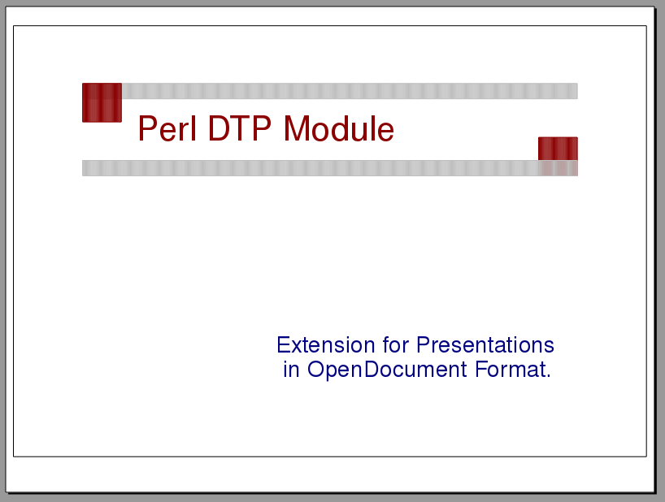
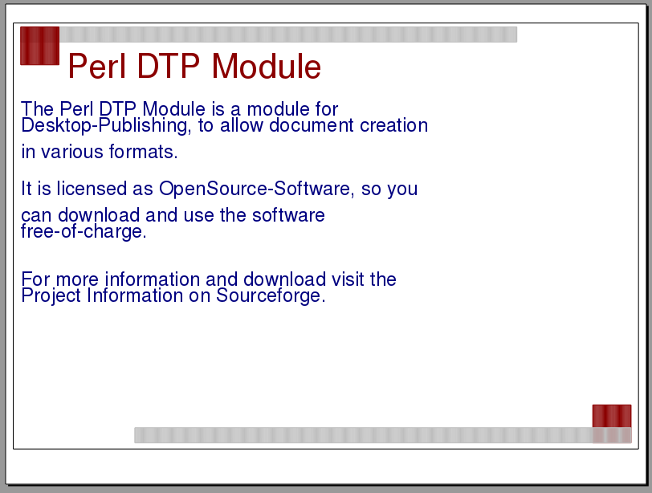
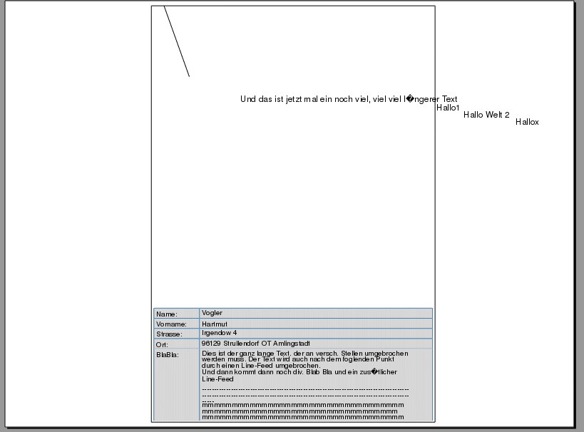
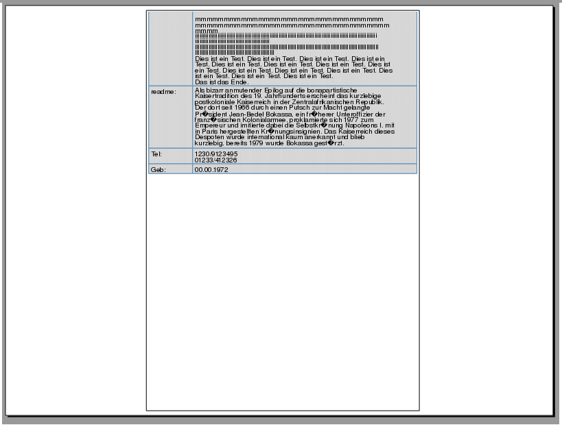
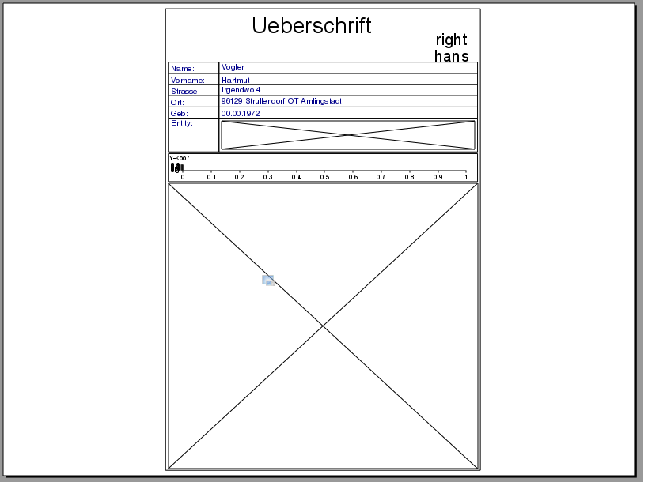
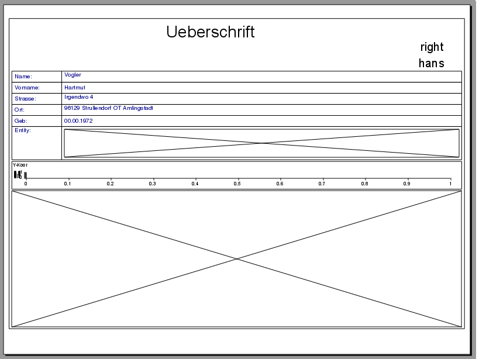
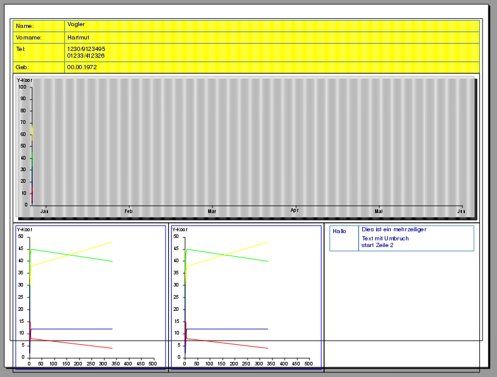
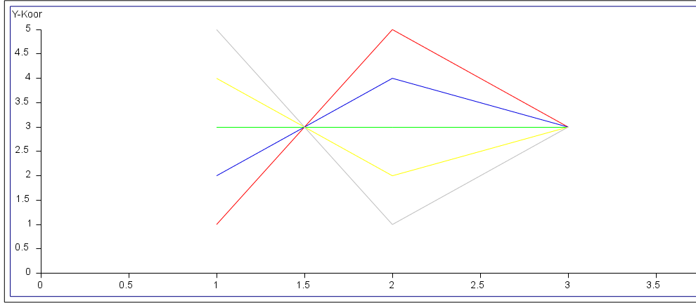

Perl DTP ModuleDesktop Publishing in various formats |
created: 08/2013 |
General Description |
The Perl DTP Module is a module for Desktop-Publishing, to allow document creation in various formats.
It is designated e.g. to create documents of reportings or summaries automatically by use of scripts.
Licensed as OpenSource-Software permits a free-of-charge download and use or modify of the software.
The programming language is perl, so that makes it easy to use and integrate in existing applications.
For more information and download visit the Project Summary on Sourceforge.
Output document formats |
At first supported formats for document creation were PDF, JPG and PNG. With the last extension it's also possible to create presentations in OpenDoument-Format ODP, based on existing dtp creation classes.
At document-creation would payed attention on structure of xml-code, so that the presentation documents are compatible with newer Microsoft® Office PowerPoint versions (tested with PowerPoint 2007).
The extension is in development-state, and not optimal designed for performance, document-size or object-alignment.
How to use DTP module |
After downloading the module-files from Sourceforge, you can find some sample-files in folder /test/.
To create files with the scripts you can use it als follows:
perl 6_odpsample.pl odp would create a presentation-file which looks like the first two pictures in the gallery below.
The same call with option pdf instead of odp would create the output as a pdf-document, jpg as a jpeg-image, and so on..
Here you can see some output in presentation format from the samples:
|  |  |  |  |  |  |  |
{kind=link}
{kind=link}
{kind=link}
{kind=link}
{kind=link}
{kind=link}
{kind=link}
For more information of usage read the Function Description.
Function Description |
The DTP-Extension is not fully develeoped, so there still is no support for all the methods in superior dtp module.
|
After you included the path of the dtp-library files in your document, use lib('lib','../lib'); and you created dtp object use DTP; my $dtp=new DTP(odp); you can call methods with your new $dtp object. |
Here is a brief of some important methods, you can use for creating presentation documents by use of perl-dtp:
| function call | call parameter | (sample) values | description | |
| NewPage() | format |
A4landscape A4 (default) |
Creates a new page/slide in landscape- or in potrait-layout. |
|
| TextOut() |
$x $y $text %font |
x-position of text element y-position of text element text as string information about fontstyle as hash |
Displays a text element on defined position with given information about text-font and -style. |
|
| WriteLine() |
$text %font additional text box styles |
text as string information about font style as hash addition textbox styles as hash |
Creates a new text element on current position in document. Additionally you can set some values of text box apperance (f.e. background-, border-color,..). |
|
| Line() |
$x1 $y1 $x2 $y2 additional line styles |
x-position of start point y-position of start point x-position of end point y-position of end point additional line styles as hash |
Creates a new line element, where you can define the start- and end-position and styles like color and width. |
|
| Rec() |
$x1 $y1 $x2 $y2 additional box styles |
x-position of start point y-position of start point x-position of end point y-position of end point additional box styles as hash |
Creates a new rectangle element, where you can define the start (position on the left upper), end (position on the right lower end) and styles like color and if it should be filled. |
Additionally you can use subclasses of dtp module to create linecharts or tables, f.e. for creating a linechart you can proceed as follows:
|
.. the sample creates an output like this:  |
{kind=link}
Perl DTP Module | Desktop Publishing in various formats |
| Developers: | Hartmut Vogler |
| Holm Basedow | |
| Oliver Domeischel |
For more information and download visit the Project Summary on Sourceforge.